From Theory to Practice: Strengthening Research Integrity with Preregistration and Registered Reports
Juan David Leongómez PhD, MSc
jleongomez@unbosque.edu.co

ISHE Summer Institute 2025 · Valparaiso, Chile
📲 Access the Slides Online
Part 1: The challenges to scientific credibility
Q: What percentage of published findings in psychology are statistically significant?
Q: What percentage of published findings in psychology are statistically significant?
A: 96%
Q: What percentage of published findings in psychology are statistically significant?
A: 96%
Q: What percentage of published findings in psychology are statistically significant?
A: 96%

1.1 Can we trust the literature?
There are 2 options:
- We study effects with >90% power and >90% probability of being true.
1.1 Can we trust the literature?
There are 2 options:
- We study effects with >90% power and >90% probability of being true.
- There is massive publication bias.
1.1 Can we trust the literature?
- There is massive publication bias (in multiple disciplines).
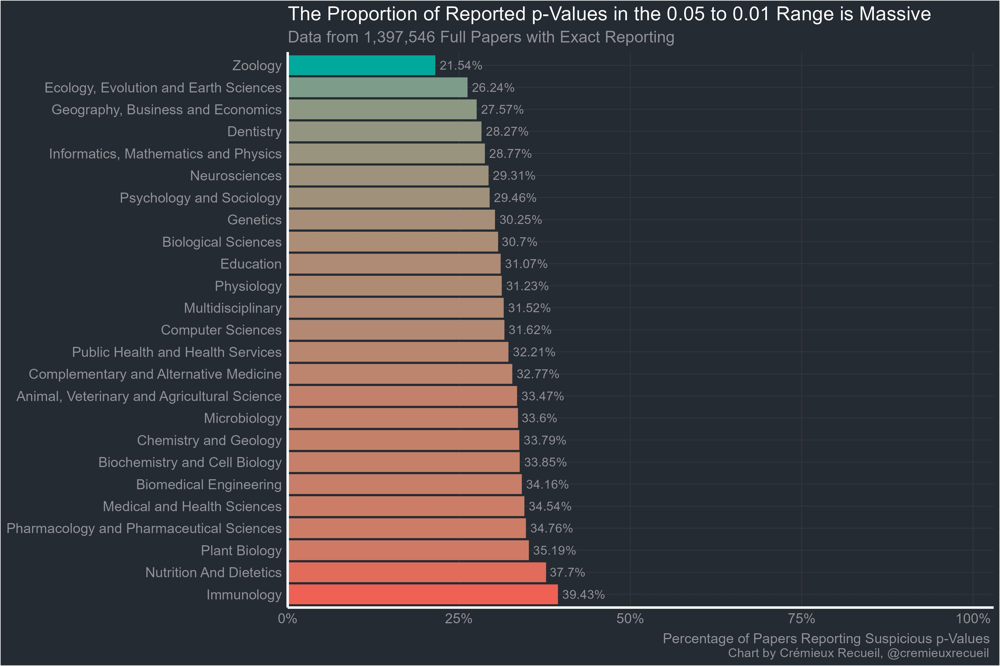
Source
1.2 The significance filter

1.2 The significance filter
1.1 million z-values medical research (1976–2019) 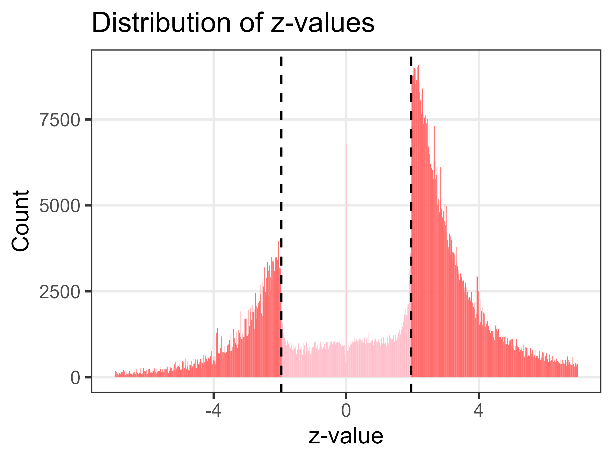
van Zwet & Cator (2021)
Also PLOS ONE 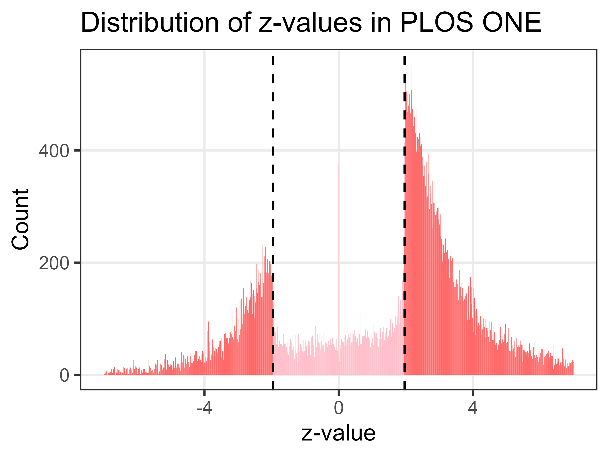
1.3 Threats to Scientific Replicability
1.3 Threats to Scientific Replicability
- 🧪 P-hacking
- Trying multiple analyses to get p < .05
- Inflates Type I error
- 💡 HARKing
- Hypothesising After Results are Known
- Misleads about test nature
1.3 Threats to Scientific Replicability
- 💡 HARKing
1.3 Threats to Scientific Replicability
- 📦 Publication Bias
- Journals prefer positive results
- Nulls go to the file drawer
- 📏 Low Statistical Power
- Small samples → false negatives & inflated effects
1.3 Threats to Scientific Replicability
- 🔧 Flexible Pipelines
- Many ways to analyse data → bias if not preplanned
- 🧠 Lack of Preregistration
- Can’t distinguish exploratory vs. confirmatory
1.3 Threats to Scientific Replicability
- 🧾 Inadequate Reporting
- Missing methods, software versions, etc.
- 📊 Selective Outcome Reporting
- Choosing time points or measures post hoc
1.3 Threats to Scientific Replicability
- 🔄 Data/Code not Shared
- Blocks replication & error-checking
- 🌐 Cultural Incentives
- Publish-or-perish culture
- Replications & nulls undervalued
1.3 Threats to Scientific Replicability
The four horsemen of the reproducibility apocalypse 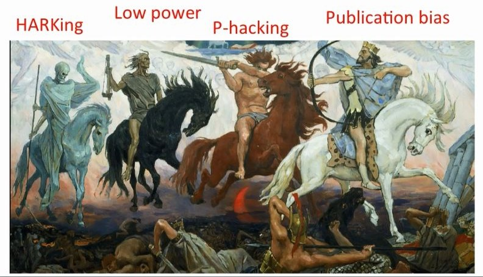
Part 2: Preregistration
2.1 What is preregistration?
Pre-registration is the act of specifying your research plan before conducting the study
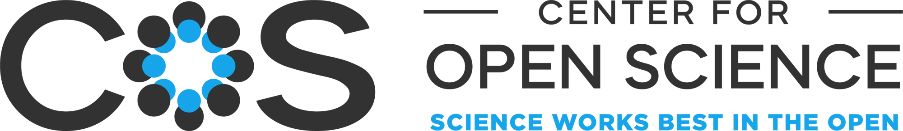
2.1 What is preregistration?
2.1 What is preregistration?
What is preregistration?
- Define your research question and hypotheses before collecting data
- Specify your analysis plan and study design in advance
- Clearly link your hypotheses to your planned methods and outcomes
2.1 What is preregistration?
Why preregister?
- Enhances credibility by making your intentions transparent
- Helps you plan better and avoid analytical drift
- Keeps all your design and analysis decisions in one place — even before data collection!
2.1 What is preregistration?
Can I still explore my data?
Absolutely! Preregistration doesn’t ban exploration. It just encourages clarity between confirmatory and exploratory analyses
- You can deviate from your plan. Just be upfront and explain why
- The goal isn’t rigidity, but transparency
2.2 Key Benefits of preregistration
| Effect | Description | Citation |
|---|---|---|
| Transparency | Public hypotheses & plans | Toth et al, 2019; Marsden et al, 2022; Ioannidis et al, 2022; Dewitte et al, 2021 |
| Less Bias | Encourages reporting nulls | Toth et al, 2019; Marsden et al, 2022; Ioannidis et al, 2022; Waldron et al, 2022 |
| Clearer Claims | Exploratory ≠ Confirmatory | Toth et al, 2019; Dewitte et al, 2021; Waldron et al, 2022 |
| Better Quality | Plans include power, exclusion, etc. | Toth et al, 2019; Waldron et al, 2022; Ioannidis et al, 2022 |
| Credibility | Deviations are explicit | Ioannidis et al, 2022; Dewitte et al, 2021; Waldron et al, 2022; Osborne et al, 2022 |
| Easier Review | Reviewers know the plan | Marsden et al, 2022; Toth et al, 2019 |
| Better Workflow | Forces early planning | Dewitte et al, 2021; Osborne et al, 2022 |
2.3 Let’s try a preregistration!

Open OSF Registries in new tab → https://osf.io/registries
Note: You need to log in. If needed, create an account
2.3 Let’s Try a Preregistration! Step 1
- Once you’re logged into OSF, go to the Registries section
- You can browse relevant registries for inspiration
- To create a preregistration, click on Add New
2.3 Let’s Try a Preregistration! Step 2
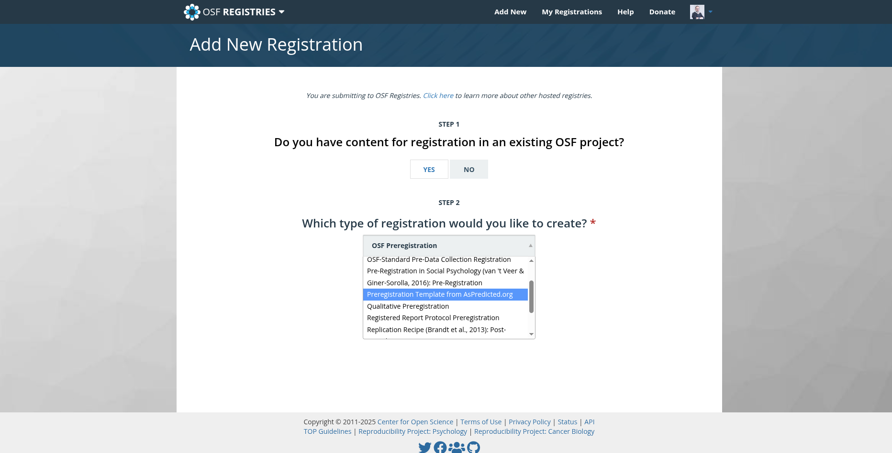
- You can link your preregistration to an existing OSF project
- There are many templates available for different study types
- For this example, select the AsPredicted.org template
2.3 Let’s Try a Preregistration! Step 3
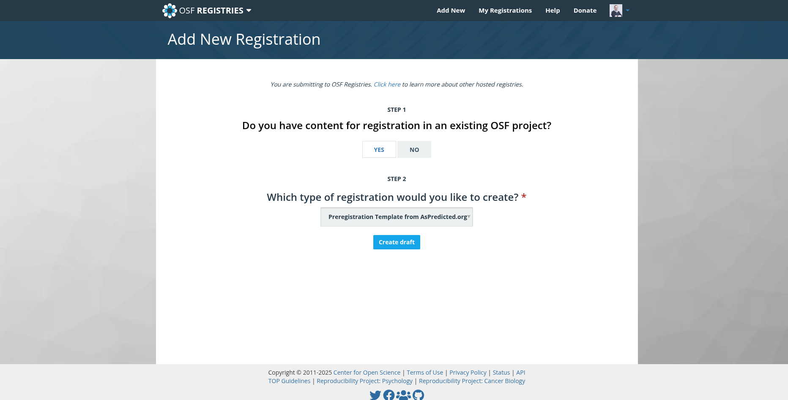
- Click on Create draft to begin your preregistration
2.3 Let’s Try a Preregistration! Step 4
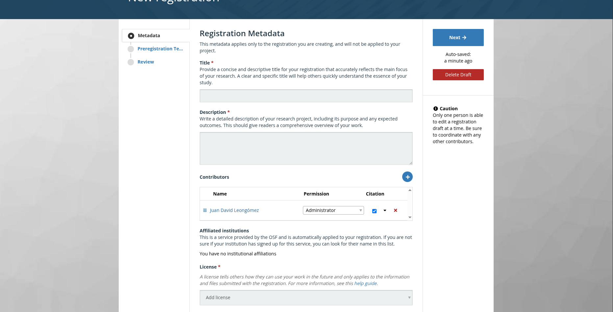
- Fill out the following fields:
- Title
- Description
- Contributors (co-authors)
- License selection
- Subject areas
- Title
2.3 Let’s Try a Preregistration! Step 5
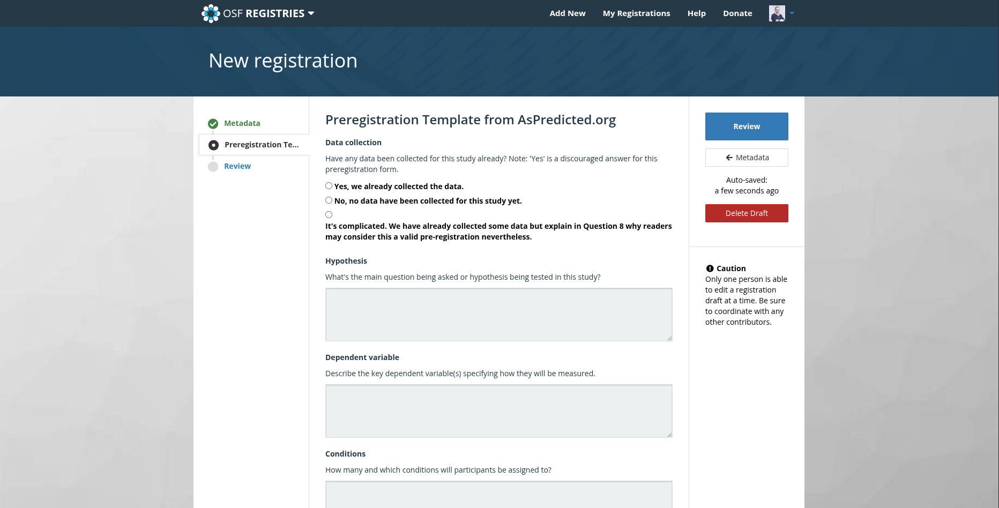
- Indicate whether data collection has already begun
- Describe your study plan clearly:
- The more detail, the better
- For sample size, include a justification
(Lakens, 2022)
- The more detail, the better
2.3 Let’s Try a Preregistration! Step 5 (continued)
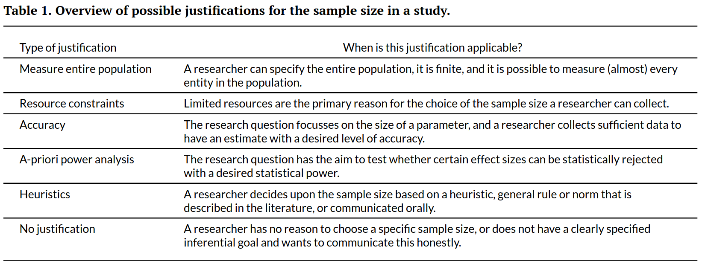
- Indicate whether data collection has already begun
- Describe your study plan clearly:
- The more detail, the better
- For sample size, include a justification
(Lakens, 2022)
- The more detail, the better
2.3 Let’s Try a Preregistration! Step 6
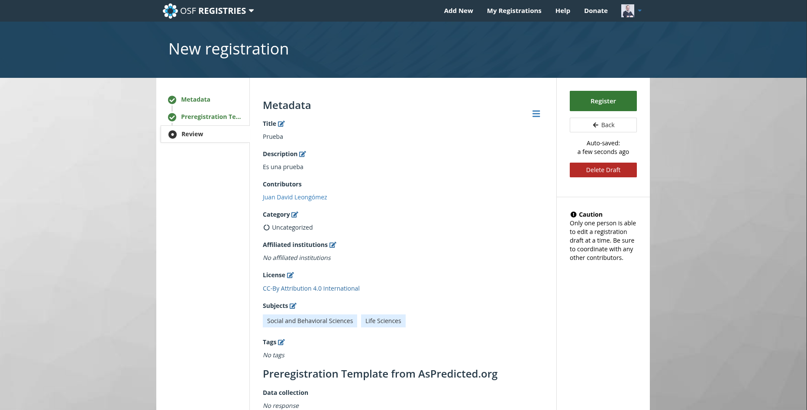
- Review your preregistration and correct any mistakes
- When ready, click Register to finalise
2.3 Let’s Try a Preregistration! Step 7
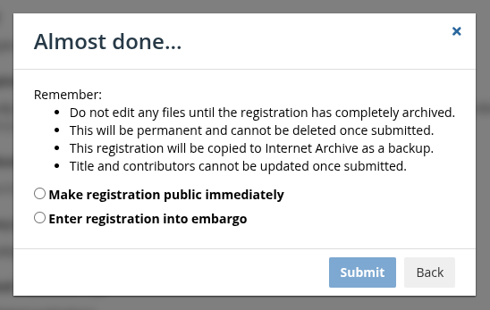
- You can make your preregistration public, or place it under an embargo (delayed release)
2.3 Let’s Try a Preregistration!
Each preregistration is automatically assigned a unique URL and a DOI for permanent reference.
For this workshop, I created an example:
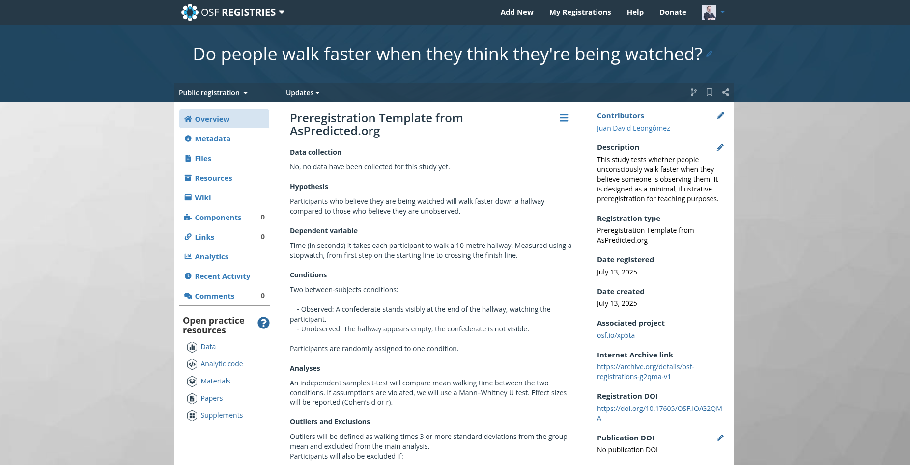
👉 View this preregistration
2.4 Limitations & Considerations
- Not a cure-all; vague preregistrations still allow bias
Waldron et al, 2022; Poole et al, 2024
- Concerns: bureaucracy, misuse, restriction of exploratory analysis
Toth et al, 2019; Klonsky et al, 2024; Waldron et al, 2022
- Not all research types benefit equally, but broadly beneficial
Dewitte et al, 2021; Ioannidis et al, 2022; Waldron et al, 2022
Part 3: Registered Reports
3.1 The difference?
3.1 The difference?
- Peer review before data collection
- Accepted in principle → guaranteed publication
- Peer-reviewed methods → stronger designs
3.2 Key benefits
| Effect | Description | Citation |
|---|---|---|
| Reduces Publication Bias | Acceptance is based on study design, not results | Chambers & Tzavella, 2021; Soderberg et al, 2021; Liu et al, 2025; Chin et al, 2021 |
| Methodological Rigor | Early peer review enhances study design, analysis plans | Soderberg et al, 2021; Cook et al, 2019; 2025; Lakens et al, 2024 |
| Transparency and Reproducibility | Protocols and analysis plans are pre-specified and openly available | Chambers & Tzavella, 2021; Liu et al, 2025; Nosek et al, 2014; Lakens et al, 2024 |
| Reduces Questionable Practices | Limits practices like p-hacking and HARKing | Nosek et al, 2014; Timming et al, 2021; Lakens et al, 2024; Manago et al, 2023 |
| Constructive Early Feedback | Receive expert input on study design before data collection | Cook et al, 2021, 2025; Cook et al, 2021; Kiyonaga et al, 2019 |
| Promotes Acceptance of Replications/Null Results | Encourages publication of studies regardless of outcome | Chambers et al, 2020; Nosek et al, 2014; Lakens et al, 2024; Henderson et al, 2022 |
3.3 The PCI RR model
3.3 The PCI RR model
- Peer Community In Registered Reports (PCI RR) is a free, non-profit platform for reviewing and recommending Registered Reports.
- Authors submit a Stage 1 manuscript → receive peer review → upon in-principle acceptance (IPA), they can:
- Publish the Stage 2 report in any of 100+ PCI RR-friendly journals
- Or just use the PCI RR recommendation (free, citable)
- Ideal for authors who want:
- A journal-agnostic review process
- More control over publication options
- Transparent, open peer review
3.3 The PCI RR model
You can learn more about the submission process and browse Stage 1 and Stage 2 reports at:
3.4 Traditional vs. RRsPCI RR
Traditional Journal
- Submit directly to journal
- Closed review process
- Journal decides on IPA and publication
- APCs may apply
PCI RR
- Submit to platform, not journal
- Transparent review process
- Choose journal after in-principle acceptance
- Completely free
3.5 Registered Reports: Real-World Adoption
- ✅ Over 300 journals now offer Registered Reports
- 🧪 Used in disciplines ranging from psychology to ecology, medicine, and economics
- 💬 Growing support from funders and institutions
- 🌍 PCI RR offers a global, open-access alternative
Sources: cos.io, PCIRR, Chambers & Tzavella, 2021
3.6 Are Registered Reports Always Appropriate?
- Not ideal for purely exploratory or rapid-response studies
- May introduce extra planning time and peer-review delays
- But most confirmatory studies benefit from this model
3.7 How to Start with Registered Reports
- Pick a journal or use PCI RR
- Follow the RR template (e.g., OSF, journal guidelines)
- Submit your Stage 1 manuscript before collecting data
- Revise based on peer review and receive IPA
- Collect data → submit Stage 2 → publish with confidence!
Questions? Discussion
Feel free to ask, critique, or share your experiences.
Extra (if time allows)
- Search OSF Registries or PCI RR
- Discuss good vs. vague examples
Summary
- Many threats to replicability are systemic — but solvable
- Preregistration helps plan better, interpret clearly, and build credibility
- Registered Reports realign incentives and reduce bias
- Tools like OSF and PCI RR make this accessible and scalable
Thank you!

Juan David Leongómez PhD, MSc
jleongomez@unbosque.edu.co
Juan David Leongómez PhD, MSc